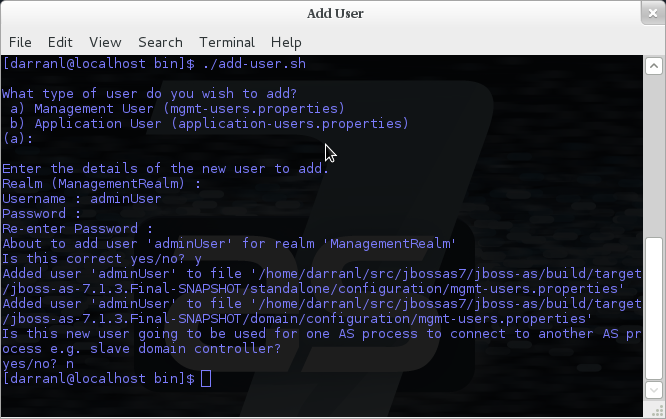
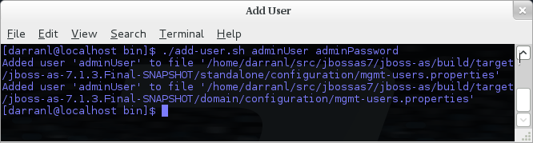
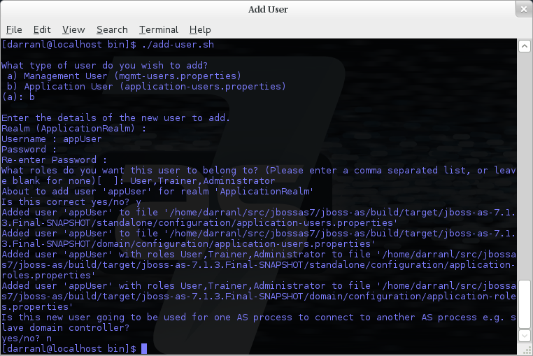
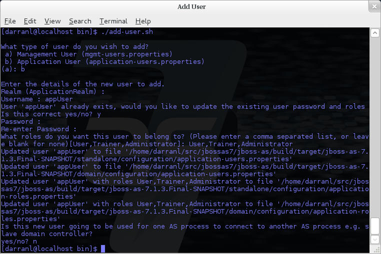

<security-realm name="ManagementRealm"> <plug-ins></plug-ins> <server-identities></server-identities> <authentication></authentication> <authorization></authorization> </security-realm>
Within WildFly 8 we make use of security realms to secure access to the management interfaces, these same realms are used to secure inbound access as exposed by JBoss Remoting such as remote JNDI and EJB access, the realms are also used to define an identity for the server - this identity can be used for both inbound connections to the server and outbound connections being established by the server.
General Structure
The general structure of a management realm definition is: -
-
plug-ins - This is an optional element that is used to define modules what will be searched for security realm PlugInProviders to extend the capabilities of the security realms.
-
server-identities - An optional element to define the identity of the server as visible to the outside world, this applies to both inbound connection to a resource secured by the realm and to outbound connections also associated with the realm.
One example is the SSL identity of the server, for inbound connections this will control the identity of the server as the SSL connection is established, for outbound connections this same identity can be used where CLIENT-CERT style authentication is being performed.
A second example is where the server is establishing an outbound connection that requires username / password authentication - this element can be used to define that password.
-
authentication - This is probably the most important element that will be used within a security realm definition and mostly applies to inbound connections to the server, this element defines which backing stores will be used to provide the verification of the inbound connection.
This element is optional as there are some scenarios where it will not be required such as if a realm is being defined for an outbound connection using a username and password.
-
authorization - This is the final optional element and is used to define how roles are loaded for an authenticated identity. At the moment this is more applicable for realms used for access to EE deployments such as web applications or EJBs but this will also become relevant as we add role based authorization checks to the management model.
Using a Realm
After a realm has been defined it needs to be associated with an inbound or outbound connection for it to be used, the following are some examples where these associations are used within the WildFly 8 configuration.
Inbound Connections
Management Interfaces
Either within the standalone.xml or host.xml configurations the security realms can be associated with the management interfaces as follows: -
<native-interface security-realm="ManagementRealm">...</native-interface> <http-interface security-realm="ManagementRealm">...</http-interface>
If the security-realm attribute is omitted or removed from the interface definition it means that access to that interface will be unsecured
By default we do bind these interfaces to the loopback address so that the interfaces are not accessible remotely out of the box, however do be aware that if these interfaces are then unsecured any other local user will be able to control and administer the WildFly 8 installation.
Also do note that the security-realm attribute is defined on each interface independently, this means that you could define a different security realm for each - this may be applicable if say you want the administrators to only access over the HTTP interface and leave only local users to access the native interface.
Remoting Subsystem
The Remoting subsystem exposes a connector to allow for inbound comunications with JNDI and the EJB subsystem by default we associate the ApplicationRealm with this connection.
<subsystem xmlns="urn:jboss:domain:remoting:1.1"> <connector name="remoting-connector" socket-binding="remoting" security-realm="ApplicationRealm"/> </subsystem>
Outbound Connections
Remoting Subsystem
Outbound connections can also be defined within the Remoting subsystem, these are typically used for remote EJB invocations from one AS server to another, in this scenario the security realm is used to obtain the server identity either it's password for X.509 certificate and possibly a trust store to verify the certificate of the remote host.
Even if the referenced realm contains username and password authentication configuration the client side of the connection will NOT use this to verify the remote server.
<remote-outbound-connection name="remote-ejb-connection"
outbound-socket-binding-ref="binding-remote-ejb-connection"
username="user1"
security-realm="PasswordRealm">
The security realm is only used to obtain the password for this example, as you can see here the username is specified separately.
Slave Host Controller
When running in domain mode slave host controllers need to establish a connection to the native interface of the master domain controller so these also need a realm for the identity of the slave.
<domain-controller>
<remote host="${jboss.domain.master.address}" port="${jboss.domain.master.port:9999}" security-realm="ManagementRealm"/>
</domain-controller>
By default when a slave host controller authenticates against the master domain controller it uses its configured name as its username. If you want to override the username used for authentication a username attribute can be added to the <remote /> element.
Authentication
One of the primary functions of the security realms is to define the user stores that will be used to verify the identity of inbound connections, the actual approach taken at the transport level is based on the capabilities of these backing store definitions. The security realms are used to secure inbound connections for both the http management interface and for inbound remoting connections for both the native management interface and to access other services exposed over remoting - because of this there are some small differences between how the realm is used for each of these.
At the transport level we support the following authentication mechanisms.
|
HTTP |
Remoting (SASL) |
|
None |
Anonymous |
|
N/A |
JBoss Local User |
|
Digest |
Digest |
|
Basic |
Plain |
|
Client Cert |
Client Cert |
The most notable are the first two in this list as they need some additional explanation - the final 3 are fairly standard mechanisms.
If either the http interface, the native interface or a remoting connection are difined without a security realm reference then they are effectively unsecured, in the case of the http interface this means that no authentication will be performed on the incoming connection - for the remoting connections however we make use of SASL so require at least one authentication mechanism so make use of the anonymous mechanism to allow a user in without requiring a validated authentication process.
The next mechanism 'JBoss Local User' is specific to the remoting connections - as we ship WildFly 8 secured by default we wanted a way to allow users to connect to their own AS installation after it is started without mandating that they define a user with a password - to accomplish this we have added the 'JBoss Local User' mechanism. This mechanism makes the use of tokens exchanged on the filesystem to prove that the client is local to the AS installation and has the appropriate file permissions to read a token written by the AS to file. As this mechanism is dependent on both server and client implementation details it is only supported for the remoting connections and not the http connections - at some point we may review if we can add support for this to the http interface but we would need to explore the options available with the commony used web browsers that are used to communicate with the http interface.
The Digest mechanism is simply the HTTP Digest / SASL Digest mechanism that authenticates the user by making use of md5 hashed including nonces to avoid sending passwords in plain text over the network - this is the preferred mechanism for username / password authentication.
The HTTP Basic / SASL Plain mechanism is made available for times that Digest can not be used but effectively this means that the users password will be sent over the network in the clear unless SSL is enabled.
The final mechanism Client-Cert allows X.509 certificates to be used to verify the identity of the remote client.
One point bearing in mind is that it is possible that an association with a realm can mean that a single incoming connection has the ability to choose between one or more authentication mechanisms. As an example it is possible that an incoming remoting connection could choose between 'Client Cert', A username password mechanism or 'JBoss Local User' for authentication - this would allow say a local user to use the local mechanism, a remote user to supply their username and password whilst a remote script could make a call and authenticate using a certificate.
Authorization
The actual security realms are not involved in any authorization decisions however they can be configured to load a users roles which will subsequently be used to make authorization decisions - when references to authorization are seen in the context of security realms it is this loading of roles that is being referred to.
For the loading of roles the process is split out to occur after the authentication step so after a user has been authenticated a second step will occur to load the roles based on the username they used to authenticate with.
Out Of The Box Configuration
Before describing the complete set of configuration options available within the realms we will look at the default configuration as for most users that is going to be the starting point before customising further.
The examples here are taken from the standalone configuration however the descriptions are equally applicable to domain mode, one point worth noting is that all security realms defined in the host.xml are available to be referenced within the domain configuration for the servers running on that host controller.
Management Realm
<security-realm name="ManagementRealm">
<authentication>
<local default-user="$local"/>
<properties path="mgmt-users.properties" relative-to="jboss.server.config.dir"/>
</authentication>
</security-realm>
The realm ManagementRealm is the simplest realm within the default configuration, this realm simply enables two authentication mechanisms, the local mechanism and username/password authentication which will be using Digest authentication.
-
local
When using the local mechanism it is optional for remote clients to send a username to the server, this configuration specifies that where clients do not send a username it will be assumed that the clients username is $local - the <local /> element can also be configured to allow other usernames to be specified by remote clients however for the default configuration this is not enabled so is not supported.
-
properties
For username / password authentication the users details will be loaded from the file mgmt-users.properties which is located in {jboss.home}/standalone/configuration or {jboss.home}/domain/configuration depending on the running mode of the server.
Each user is represented on their own line and the format of each line is username=HASH where HASH is a pre-prepared hash of the users password along with their username and the name of the realm which in this case is ManagementRealm.
You do not need to worry about generating the entries within the properties file as we provide a utility add-user.sh or add-user.bat to add the users, this utility is described in more detail below.
By pre-hashing the passwords in the properties file it does mean that if the user has used the same password on different realms then the contents of the file falling into the wrong hands does not nescesarily mean all accounts are compromised. HOWEVER the contents of the files do still need to be protected as they can be used to access any server where the realm name is the same and the user has the same username and password pair.
Application Realm
<security-realm name="ApplicationRealm">
<authentication>
<local default-user="$local" allowed-users="*"/>
<properties path="application-users.properties" relative-to="jboss.server.config.dir"/>
</authentication>
<authorization>
<properties path="application-roles.properties" relative-to="jboss.server.config.dir"/>
</authorization>
</security-realm>
The realm ApplicationRealm is a slightly more complex realm as this is used for both
Authentication
The authentication configuration is very similar to the ManagementRealm in that it enabled both the local mechanism and a username/password based Digest mechanism.
-
local
The local configuration is similar to the ManagementRealm in that where the remote user does not supply a username it will be assumed that the username is $local, however in addition to this there is now an allowed-users attribute with a value of '*' - this means that the remote user can specify any username and it will be accepted over the local mechanism provided that the local verification is a success.
To restrict the usernames that can be specified by the remote user a comma separated list of usernames can be specified instead within the allowed-users attribute.
-
properties
The properties definition works in exactly the same way as the definition for ManagementRealm except now the properties file is called application-users.properties.
Authorization
The contents of the Authorization element are specific to the ApplicationRealm, in this case a properties file is used to load a users roles.
The properties file is called application-roles.properties and is located in {jboss.home}/standalone/configuration or {jboss.home}/domain/configuration depending on the running mode of the server. The format of this file is username=ROLES where ROLES is a comma separated list of the users roles.
As the loading of a users roles is a second step this is where it may be desirable to restrict which users can use the local mechanism so that some users still require username and password authentication for their roles to be loaded.
other security domain
<security-domain name="other" cache-type="default">
<authentication>
<login-module code="Remoting" flag="optional">
<module-option name="password-stacking" value="useFirstPass"/>
</login-module>
<login-module code="RealmDirect" flag="required">
<module-option name="password-stacking" value="useFirstPass"/>
</login-module>
</authentication>
</security-domain>
When applications are deployed to the application server they are associated with a security domain within the security subsystem, the other security domain is provided to work with the ApplicationRealm, this domain is defined with a pair of login modules Remoting and RealmDirect.
-
Remoting
The Remoting login module is used to check if the request currently being authenticated is a request received over a Remoting connection, if so the identity that was created during the authentication process is used and associated with the current request.
If the request did not arrive over a Remoting connection this module does nothing and allows the JAAS based login to continue to the next module.
-
RealmDirect
The RealmDirect login module makes use of a security realm to authenticate the current request if that did not occur in the Remoting login module and then use the realm to load the users roles, by default this login module assumes the realm to use is called ApplicationRealm although other names can be overridden using the "realm" module-option.
The advantage of this approach is that all of the backing store configuration can be left within the realm with the security domain just delegating to the realm.
user.sh
For use with the default configuration we supply a utility add-user which can be used to manage the properties files for the default realms used to store the users and their roles.
The add-user utility can be used to manage both the users in the ManagementRealm and the users in the ApplicationRealm, changes made apply to the properties file used both for domain mode and standalone mode.
After you have installed your application server and decided if you are going to run in standalone mode or domain mode you can delete the parent folder for the mode you are not using, the add-user utility will then only be managing the properties file for the mode in use.
The add-user utility is a command line utility however it can be run in both interactive and non-interactive mode. Depending on your platform the script to run the add-user utility is either add-user.sh or add-user.bat which can be found in {jboss.home}/bin.
This guide now contains a couple of examples of this utility in use to accomplish the most common tasks.
Adding a User
Adding users to the properties files is the primary purpose of this utility.
The server caches the contents of the properties files in memory, however the server does check the modified time of the properties files on each authentication request and re-load if the time has been updated - this means all changes made by this utility are immediately applied to any running server.
A Management User
The default name of the realm for management users is ManagementRealm, when the utility prompts for the realm name just accept the default unless you have switched to a different realm.
Interactive Mode

Here we have added a new Management User called adminUser, as you can see some of the questions offer default responses so you can just press enter without repeating the default value.
For now just answer n or no to the final question, adding users to be used by processes is described in more detail in the domain management chapter.
Interactive Mode
To add a user in non-interactive mode the command ./add-user.sh {username} {password} can be used.

If you add users using this approach there is a risk that any other user that can view the list of running process may see the arguments including the password of the user being added, there is also the risk that the username / password combination will be cached in the history file of the shell you are currently using.
An Application User
When adding application users in addition to adding the user with their pre-hashed password it is also now possible to define the roles of the user.
Interactive Mode

Here a new user called appUser has been added, in this case a comma separated list of roles has also been specified.
As with adding a management user just answer n or no to the final question until you know you are adding a user that will be establishing a connection from one server to another.
Interactive Mode
To add an application user non-interactively use the command ./add-user.sh -a {username} {password}.

Non-interactive mode does not support defining a list of users, to associate a user with a set of roles you will need to manually edit the application-roles.properties file by hand.
Updating a User
Within the add-user utility it is also possible to update existing users, in interactive mode you will be prompted to confirm if this is your intention.
A Management User
Interactive Mode

Interactive Mode
In non-interactive mode if a user already exists the update is automatic with no confirmation prompt.
An Application User
Interactive Mode

On updating a user with roles you will need to re-enter the list of roles assigned to the user.
Interactive Mode
In non-interactive mode if a user already exists the update is automatic with no confirmation prompt.
Community Contributions
There are still a few features to add to the add-user utility such as removing users or adding application users with roles in non-interactive mode, if you are interested in contributing to WildFly development the add-user utility is a good place to start as it is a stand alone utility, however it is a part of the AS build so you can become familiar with the AS development processes without needing to delve straight into the internals of the application server.
JMX Security
When configuring the security realms remote access to the server's MBeanServer needs a special mention. When running in standalone mode the following is the default configuration: -
<native-interface security-realm="ManagementRealm">...</native-interface>
<subsystem xmlns="urn:jboss:domain:jmx:1.1"> ... <remoting-connector/> </subsystem>
With this configuration remote access to JMX is provided over the native management interface, this is secured using the realm ManagementRealm, this means that any user that can connect to the native interface can also use this interface to access the MBeanServer - to disable this just remove the <remoting-connector /> element.
In domain mode it is slightly more complicates as the native interface is exposed by the host controller process however each application server is running in it's own process so by default remote access to JMX is disabled.
<subsystem xmlns="urn:jboss:domain:remoting:1.1"> <connector name="remoting-connector" socket-binding="remoting" security-realm="ApplicationRealm"/> </subsystem>
<subsystem xmlns="urn:jboss:domain:jmx:1.1"> ... <!--<remoting-connector use-management-endpoint="false"/>--> </subsystem>
To enable remote access to JMX uncomment the <remoting-connector /> element however be aware that this will make the MBeanServer accessible over the same Remoting connector used for remote JNDI and EJB access - this means that any user that can authenticate against the realm ApplicationRealm will be able to access the MBeanServer.
The following Jira issue is currently outstanding to allow access to the individual MBeanServers by proxying through the host controllers native interface AS7-4009, if this is a feature you would use please add your vote to the issue.
Detailed Configuration
This section of the documentation describes the various configuration options when defining realms, plug-ins are a slightly special case so the configuration options for plug-ins is within it's own section.
Within a security realm definition there are four optional elements <plug-ins />, <server-identities />, <authentication />, and <authorization />, as mentioned above plug-ins is defined within it's own section below so we will begin by looking at the <server-identities /> element.
<server-identities />
The server identities section of a realm definition is used to define how a server appears to the outside world, currently this element can be used to configure a password to be used when establishing a remote outbound connection and also how to load a X.509 key which can be used for both inbound and outbound SSL connections.
<ssl />
<server-identities>
<ssl protocol="...">
<keystore path="..." relative-to="..." keystore-password="..." alias="..." key-password="..." />
</ssl>
</server-identities>
-
protocol - By default this is set to TLS and in general does not need to be set.
The SSL element then contains the nested <keystore /> element, this is used to define how to load the key from the file based (JKS) keystore.
-
path (mandatory) - This is the path to the keystore, this can be an absolute path or relative to the next attribute.
-
relative-to (optional) - The name of a service representing a path the keystore is relative to.
-
keystore-password (mandatory) - The password required to open the keystore.
-
alias (optional) - The alias of the entry to use from the keystore - for a keystore with multiple entries in practice the first usable entry is used but this should not be relied on and the alias should be set to guarantee which entry is used.
-
key-password (optional) - The password to load the key entry, if omitted the keystore-password will be used instead.
If you see the error UnrecoverableKeyException: Cannot recover key the most likely cause that you need to specify a key-password and possible even an alias as well to ensure only one key is loaded.
<secret />
<server-identities> <secret value="..." /> </server-identities>
-
value (mandatory) - The password to use for outbound connections encoded as Base64, this field also supports a vault expression should stronger protection be required.
The username for the outbound connection is specified at the point the outbound connection is defined.
<authentication />
The authentication element is predominantly used to configure the authentication that is performed on an inbound connection, however there is one exception and that is if a trust store is defined - on negotiating an outbound SSL connection the trust store will be used to verify the remote server.
<authentication> <truststore /> <local /> <jaas /> <ldap /> <properties /> <users /> <plug-in /> </authentication>
An authentication definition can have zero or one <truststore />, it can also have zero or one <local /> and it can also have one of <jaas />, <ldap />, <properties />, <users />, and <plug-in /> i.e. the local mechanism and a truststore for certificate verification can be independent switched on and off and a single username / password store can be defined.
<truststore />
<authentication> <truststore path="..." relative-to="..." keystore-password="..."/> </authentication>
This element is used to define how to load a key store file that can be used as the trust store within the SSLContext we create internally, the store is then used to verify the certificates of the remote side of the connection be that inbound or outbound.
-
path (mandatory) - This is the path to the keystore, this can be an absolute path or relative to the next attribute.
-
relative-to (optional) - The name of a service representing a path the keystore is relative to.
-
keystore-password (mandatory) - The password required to open the keystore.
Although this is a definition of a trust store the attribute for the password is keystore-password, this is because the underlying file being opened is still a key store.
<local />
<authentication> <local default-user="..." allowed-users="..." /> </authentication>
This element switches on the local authentication mechanism that allows clients to the server to verify that they are local to the server, at the protocol level it is optional for the remote client to send a user name in the authentication response.
-
default-user (optional) - If the client does not pass in a username this is the assumed username, this value is also automatically added to the list of allowed-users.
-
allowed-users (optional) - This attribute is used to specify a comma separated list of users allowed to authenticate using the local mechanism, alternatively '*' can be specified to allow any username to be specified.
<jaas />
<authentication> <jaas name="..." /> </authentication>
The jaas element is used to enable username and password based authentication where the supplied username and password are verified by making use of a configured jaas domain.
-
name (mandatory) - The name of the jaas domain to use to verify the supplied username and password.
As JAAS authentication works by taking a username and password and verifying these the use of this element means that at the transport level authentication will be forced to send the password in plain text, any interception of the messages exchanged between the client and server without SSL enabled will reveal the users password.
<ldap />
<authentication>
<ldap connection="..." base-dn="..." recursive="..." user-dn="...">
<username-filter attribute="..." />
<advanced-filter filter="..." />
</ldap>
</authentication>
The ldap element is used to define how LDAP searches will be used to authenticate a user, this works by first connecting to LDAP and performing a search using the supplied user name to identity the distinguished name of the user and then a subsequent connection is made to the server using the password supplied by the user - if this second connection is a success then authentication succeeds.
Due to the verification approach used this configuration causes the authentication mechanisms selected for the protocol to cause the password to be sent from the client in plain text, the following Jira issue is to investigating proxying a Digest authentication with the LDAP server so no plain text password is needed AS7-4195.
-
connection (mandatory) - The name of the connection to use to connect to LDAP.
-
base-dn (mandatory) - The distinguished name of the context to use to begin the search from.
-
recursive (optional) - Should the filter be executed recursively? Defaults to false.
-
user-dn (optional) - After the user has been found specifies which attribute to read for the users distinguished name, defaults to 'dn'.
Within the ldap element only one of <username-filter /> or <advanced-filter /> can be specified.
<username-filter />
This element is used for a simple filter to match the username specified by the remote user against a single attribute, as an example with Active Directory the match is most likely to be against the 'sAMAccountName' attribute.
-
attribute (mandatory) - The name of the field to match the users supplied username against.
<advanced-filter />
This element is used where a more advanced filter is required, one example use of this filter is to exclude certain matches by specifying some additional criteria for the filter.
-
filter (mandatory) - The filter to execute to locate the user, this filter should contain '{0}' as a place holder for the username supplied by the user authenticating.
<properties />
<authentication> <properties path="..." relative-to="..." plain-text="..." /> </authentication>
The properties element is used to reference a properties file to load to read a users password or pre-prepared digest for the authentication process.
-
path (mandatory) - The path to the properties file, either absolute or relative to the path referenced by the relative-to attribute.
-
relative-to (optional) - The name of a path service that the defined path will be relative to.
-
plain-text (optional) - Setting to specify if the passwords are stored as plain text within the properties file, defaults to false.
By default the properties files are expected to store a pre-prepared hash of the users password in the form HEX( MD5( username ':' realm ':' password))
<users />
<authentication>
<users>
<user username="...">
<password>...</password>
</user>
</users>
</authentication>
This is a very simple store of a username and password that stores both of these within the domain model, this is only really provided for the provision of simple examples.
-
username (mandatory) - A users username.
The <password/> element is then used to define the password for the user.
<authorization />
The authorization element is used to define how a users roles can be loaded after the authentication process completes, these roles may then be used for subsequent authorization decisions based on the service being accessed. At the moment only a properties file approach or a custom plug-in are supported - support for loading roles from LDAP or from a database are planned for a subsequent release.
<authorization> <properties /> <plug-in /> </authorization>
<properties />
<authorization> <properties path="..." relative-to="..." /> </authorization>
The format of the properties file is username={ROLES} where {ROLES} is a comma separated list of the users roles.
-
path (mandatory) - The path to the properties file, either absolute or relative to the path referenced by the relative-to attribute.
-
relative-to (optional) - The name of a path service that the defined path will be relative to.
<outbound-connection />
Strictly speaking these are not a part of the security realm definition, however at the moment they are only used by security realms so the definition of outbound connection is described here.
<management>
<security-realms />
<outbound-connections>
<ldap />
</outbound-connections>
</management>
<ldap />
At the moment we only support outbound connections to ldap servers for the authentication process - this will later be expanded when we add support for database based authentication.
<outbound-connections> <ldap name="..." url="..." search-dn="..." search-credential="..." initial-context-factory="..." /> </outbound-connections>
The outbound connections are defined in this section and then referenced by name from the configuration that makes use of them.
-
name (mandatory) - The unique name used to reference this connection.
-
url (mandatory) - The URL use to establish the LDAP connection.
-
search-dn (mandatory) - The distinguished name of the user to authenticate as to perform the searches.
-
search-credential (mandatory) - The password required to connect to LDAP as the search-dn.
-
initial-context-factory (optional) - Allows overriding the initial context factory, defaults to 'com.sun.jndi.ldap.LdapCtxFactory'
Plug Ins
Within WildFly 8 for communication with the management interfaces and for other services exposed using Remoting where username / password authentication is used the use of Digest authentication is preferred over the use of HTTP Basic or SASL Plain so that we can avoid the sending of password in the clear over the network. For validation of the digests to work on the server we either need to be able to retrieve a users plain text password or we need to be able to obtain a ready prepared hash of their password along with the username and realm.
Previously to allow the addition of custom user stores we have added an option to the realms to call out to a JAAS domain to validate a users username and password, the problem with this approach is that to call JAAS we need the remote user to send in their plain text username and password so that a JAAS LoginModule can perform the validation, this forces us down to use either the HTTP Basic authentication mechanism or the SASL Plain mechanism depending on the transport used which is undesirable as we can not longer use Digest.
To overcome this we now support plugging in custom user stores to support loading a users password, hash and roles from a custom store to allow different stores to be implemented without forcing the authentication back to plain text variant, this article describes the requirements for a plug in and shows a simple example plug-in for use with WildFly 8.
When implementing a plug in there are two steps to the authentication process, the first step is to load the users identity and credential from the relevant store - this is then used to verify the user attempting to connect is valid. After the remote user is validated we then load the users roles in a second step. For this reason the support for plug-ins is split into the two stages, when providing a plug-in either of these two steps can be implemented but there is no requirement to implement the other side.
When implementing a plug-in the following interfaces are the bare minimum that need to be implemented so depending on if a plug-in to load a users identity or a plug-in to load a users roles is being implemented you will be implementing one of these interfaces.
Note - All classes and interfaces of the SPI to be implemented are in the 'org.jboss.as.domain.management.plugin' package which is a part of the 'org.jboss.as.domain-management' module but for simplicity for the rest of this section only the short names will be shown.
AuthenticationPlugIn
To implement an AuthenticationPlugIn the following interface needs to be implemened: -
public interface AuthenticationPlugIn<T extends Credential> {
Identity<T> loadIdentity(final String userName, final String realm) throws IOException;
}
During the authentication process this method will be called with the user name supplied by the remote user and the name of the realm they are authenticating against, this method call represents that an authentication attempt is occurring but it is the Identity instance that is returned that will be used for the actual authentication to verify the remote user.
The Identity interface is also an interface you will implement: -
public interface Identity<T extends Credential> {
String getUserName();
T getCredential();
}
Additional information can be contained within the Identity implementation although it will not currently be used, the key piece of information here is the Credential that will be returned - this needs to be one of the following: -
PasswordCredential
public final class PasswordCredential implements Credential {
public PasswordCredential(final char[] password);
public char[] getPassword();
void clear();
}
The PasswordCredential is already implemented so use this class if you have the plain text password of the remote user, by using this the secured interfaces will be able to continue using the Digest mechanism for authentication.
DigestCredential
public final class DigestCredential implements Credential {
public DigestCredential(final String hash);
public String getHash();
}
This class is also already implemented and should be returned if instead of the plain text password you already have a pre-prepared hash of the username, realm and password.
ValidatePasswordCredential
public interface ValidatePasswordCredential extends Credential {
boolean validatePassword(final char[] password);
}
This is a special Credential type to use when it is not possible to obtain either a plain text representation of the password or a pre-prepared hash - this is an interface as you will need to provide an implementation to verify a supplied password. The down side of using this type of Credential is that the authentication mechanism used at the transport level will need to drop down from Digest to either HTTP Basic or SASL Plain which will now mean that the remote client is sending their credential across the network in the clear.
If you use this type of credential be sure to force the mechanism choice to Plain as described in the configuration section below.
AuthorizationPlugIn
If you are implementing a custom mechanism to load a users roles you need to implement the AuthorizationPlugIn
public interface AuthorizationPlugIn {
String[] loadRoles(final String userName, final String realm) throws IOException;
}
As with the AuthenticationPlugIn this has a single method that takes a users userName and realm - the return type is an array of Strings with each entry representing a role the user is a member of.
PlugInConfigurationSupport
In addition to the specific interfaces above there is an additional interface that a plug-in can implement to receive configuration information before the plug-in is used and also to receive a Map instance that can be used to share state between the plug-in instance used for the authentication step of the call and the plug-in instance used for the authorization step.
public interface PlugInConfigurationSupport {
void init(final Map<String, String> configuration, final Map<String, Object> sharedState) throws IOException;
}
Installing and Configuring a Plug-In
The next step of this article describes the steps to implement a plug-in provider and how to make it available within WildFly 8 and how to configure it. Example configuration and an example implementation are shown to illustrate this.
The following is an example security realm definition which will be used to illustrate this: -
<security-realm name="PlugInRealm">
<plug-ins>
<plug-in module="org.jboss.as.sample.plugin"/>
</plug-ins>
<authentication>
<plug-in name="Sample">
<properties>
<property name="darranl.password" value="dpd"/>
<property name="darranl.roles" value="Admin,Banker,User"/>
</properties>
</plug-in>
</authentication>
<authorization>
<plug-in name="Delegate" />
</authorization>
</security-realm>
Before looking closely at the packaging and configuration there is one more interface to implement and that is the PlugInProvider interface, that interface is responsible for making PlugIn instances available at runtime to handle the requests.
PlugInProvider
public interface PlugInProvider {
AuthenticationPlugIn<Credential> loadAuthenticationPlugIn(final String name);
AuthorizationPlugIn loadAuthorizationPlugIn(final String name);
}
These methods are called with the name that is supplied in the plug-in elements that are contained within the authentication and authorization elements of the configuration, based on the sample configuration above the loadAuthenticationPlugIn method will be called with a parameter of 'Sample' and the loadAuthorizationPlugIn method will be called with a parameter of 'Delegate'.
Multiple plug-in providers may be available to the application server so if a PlugInProvider implementation does not recognise a name then it should just return null and the server will continue searching the other providers. If a PlugInProvider does recognise a name but fails to instantiate the PlugIn then a RuntimeException can be thrown to indicate the failure.
As a server could have many providers registered it is recommended that a naming convention including some form of hierarchy is used e.g. use package style names to avoid conflicts.
For the example the implementation is as follows: -
public class SamplePluginProvider implements PlugInProvider {
public AuthenticationPlugIn<Credential> loadAuthenticationPlugIn(String name) {
if ("Sample".equals(name)) {
return new SampleAuthenticationPlugIn();
}
return null;
}
public AuthorizationPlugIn loadAuthorizationPlugIn(String name) {
if ("Sample".equals(name)) {
return new SampleAuthenticationPlugIn();
} else if ("Delegate".equals(name)) {
return new DelegateAuthorizationPlugIn();
}
return null;
}
}
The load methods are called for each authentication attempt but it will be an implementation detail of the provider if it decides to return a new instance of the provider each time - in this scenario as we also use configuration and shared state then new instances of the implementations make sense.
To load the provider use a ServiceLoader so within the META-INF/services folder of the jar this project adds a file called 'org.jboss.as.domain.management.plugin.PlugInProvider' - this contains a single entry which is the fully qualified class name of the PlugInProvider implementation class.
org.jboss.as.sample.SamplePluginProvider
Package as a Module
To make the PlugInProvider available to the application it is bundled as a module and added to the modules already shipped with WildFly 8.
To add as a module we first need a module.xml: -
<?xml version="1.0" encoding="UTF-8"?>
<module xmlns="urn:jboss:module:1.1" name="org.jboss.as.sample.plugin">
<properties>
</properties>
<resources>
<resource-root path="SamplePlugIn.jar"/>
</resources>
<dependencies>
<module name="org.jboss.as.domain-management" />
</dependencies>
</module>
The interfaces being implemented are in the 'org.jboss.as.domain-management' module so a dependency on that module is defined, this module.xml is then placed in the '{jboss.home}/modules/org/jboss/as/sample/plugin/main'.
The compiled classed and META-INF/services as described above are assembled into a jar called SamplePlugIn.jar and also placed into this folder.
Looking back at the sample configuration at the top of the realm definition the following element was added: -
<plug-ins>
<plug-in module="org.jboss.as.sample.plugin"/>
</plug-ins>
This element is used to list the modules that should be searched for plug-ins. As plug-ins are loaded during the server start up this search is a lazy search so don't expect a definition to a non existant module or to a module that does not contain a plug-in to report an error.
The AuthenticationPlugIn
The example AuthenticationPlugIn is implemented as: -
public class SampleAuthenticationPlugIn extends AbstractPlugIn {
private static final String PASSWORD_SUFFIX = ".password";
private static final String ROLES_SUFFIX = ".roles";
private Map<String, String> configuration;
public void init(Map<String, String> configuration, Map<String, Object> sharedState) throws IOException {
this.configuration = configuration;
// This will allow an AuthorizationPlugIn to delegate back to this instance.
sharedState.put(AuthorizationPlugIn.class.getName(), this);
}
public Identity loadIdentity(String userName, String realm) throws IOException {
String passwordKey = userName + PASSWORD_SUFFIX;
if (configuration.containsKey(passwordKey)) {
return new SampleIdentity(userName, configuration.get(passwordKey));
}
throw new IOException("Identity not found.");
}
public String[] loadRoles(String userName, String realm) throws IOException {
String rolesKey = userName + ROLES_SUFFIX;
if (configuration.containsKey(rolesKey)) {
String roles = configuration.get(rolesKey);
return roles.split(",");
} else {
return new String[0];
}
}
private static class SampleIdentity implements Identity {
private final String userName;
private final Credential credential;
private SampleIdentity(final String userName, final String password) {
this.userName = userName;
this.credential = new PasswordCredential(password.toCharArray());
}
public String getUserName() {
return userName;
}
public Credential getCredential() {
return credential;
}
}
}
As you can see from this implementation there is also an additional class being extended AbstractPlugIn - that is simply an abstract class that implements the AuthenticationPlugIn, AuthorizationPlugIn, and PlugInConfigurationSupport interfaces already. The properties that were defined in the configuration are passed in as a Map and importantly for this sample the plug-in adds itself to the shared state map.
The AuthorizationPlugIn
The example implementation of the authentication plug in is as follows: -
public class DelegateAuthorizationPlugIn extends AbstractPlugIn {
private AuthorizationPlugIn authorizationPlugIn;
public void init(Map<String, String> configuration, Map<String, Object> sharedState) throws IOException {
authorizationPlugIn = (AuthorizationPlugIn) sharedState.get(AuthorizationPlugIn.class.getName());
}
public String[] loadRoles(String userName, String realm) throws IOException {
return authorizationPlugIn.loadRoles(userName, realm);
}
}
This plug-in illustrates how two plug-ins can work together, by the AuthenticationPlugIn placing itself in the shared state map it is possible for the authorization plug-in to make use of it for the loadRoles implementation.
Another option to consider to achieve similar behaviour could be to provide an Identity implementation that also contains the roles and place this in the shared state map - the AuthorizationPlugIn can retrieve this and return the roles.
Forcing Plain Text Authentication
As mentioned earlier in this article if the ValidatePasswordCredential is going to be used then the authentication used at the transport level needs to be forced from Digest authentication to plain text authentication, this can be achieved by adding a mechanism attribute to the plug-in definition within the authentication element i.e.
<authentication>
<plug-in name="Sample" mechanism="PLAIN">
Example Configurations
This section of the document contains a couple of examples for the most common scenarios likely to be used with the security realms, please feel free to raise Jira issues requesting additional scenarios or if you have configured something not covered here please feel free to add your own examples - this document is editable after all 
At the moment these examples are making use of the 'ManagementRealm' however the same can apply to the 'ApplicationRealm' or any custom realm you create for yourselves.
LDAP Authentication
The following example demonstrates an example configuration making use of Active Directory to verify the users username and password.
<management>
<security-realms>
<security-realm name="ManagementRealm">
<authentication>
<ldap connection="EC2" base-dn="CN=Users,DC=darranl,DC=jboss,DC=org">
<username-filter attribute="sAMAccountName" />
</ldap>
</authentication>
</security-realm>
</security-realms>
<outbound-connections>
<ldap name="EC2" url="ldap://127.0.0.1:9797" search-dn="CN=wf8,CN=Users,DC=darranl,DC=jboss,DC=org" search-credential="password"/>
</outbound-connections>
...
</management>
For simplicity the <local/> configuration has been removed from this example, however there it is fine to leave that in place for local authentication to remain possible.
Enable SSL
The first step is the creation of the key, by default this is going to be used for both the native management interface and the http management interface - to create the key we can use the keyTool, the following example will create a key valid for one year.
Open a terminal window in the folder {jboss.home}/standalone/configuration and enter the following command: -
keytool -genkey -alias server -keyalg RSA -keystore server.keystore -validity 365
Enter keystore password: Re-enter new password:
In this example I choose 'keystore_password'.
What is your first and last name? [Unknown]: localhost
Of all of the questions asked this is the most important and should match the host name that will be entered into the web browser to connect to the admin console.
Answer the remaining questions as you see fit and at the end for the purpose of this example I set the key password to 'key_password'.
The following example shows how this newly created keystore will be referenced to enable SSL.
<security-realm name="ManagementRealm">
<server-identities>
<ssl>
<keystore path="server.keystore" relative-to="jboss.server.config.dir" keystore-password="keystore_password" alias="server" key-password="key_password" />
</ssl>
</server-identities>
<authentication>
...
</authentication>
</security-realm>
The contents of the <authentication /> have not been changed in this example so authentication still occurs using either the local mechanism or username/password authentication using Digest.
Add Client-Cert to SSL
To enable Client-Cert style authentication we just now need to add a <truststore /> element to the <authentication /> element referencing a trust store that has had the certificates or trusted clients imported.
<security-realm name="ManagementRealm">
<server-identities>
<ssl>
<keystore path="server.keystore" relative-to="jboss.server.config.dir" keystore-password="keystore_password" alias="server" key-password="key_password" />
</ssl>
</server-identities>
<authentication>
<truststore path="server.truststore" relative-to="jboss.server.config.dir" keystore-password="truststore_password" />
<local default-user="$local"/>
<properties path="mgmt-users.properties" relative-to="jboss.server.config.dir"/>
</authentication>
</security-realm>
In this scenario if Client-Cert authentication does not occur clients can fall back to use either the local mechanism or username/password authentication. To make Client-Cert based authentication mandatory just remove the <local /> and <properties /> elements.